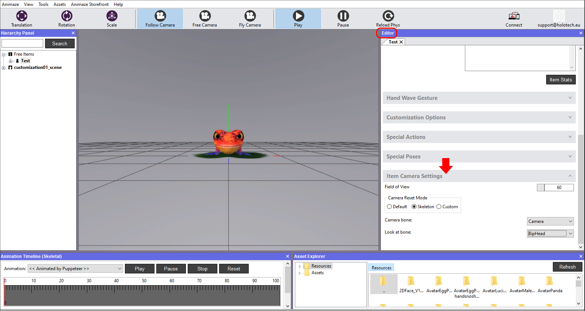
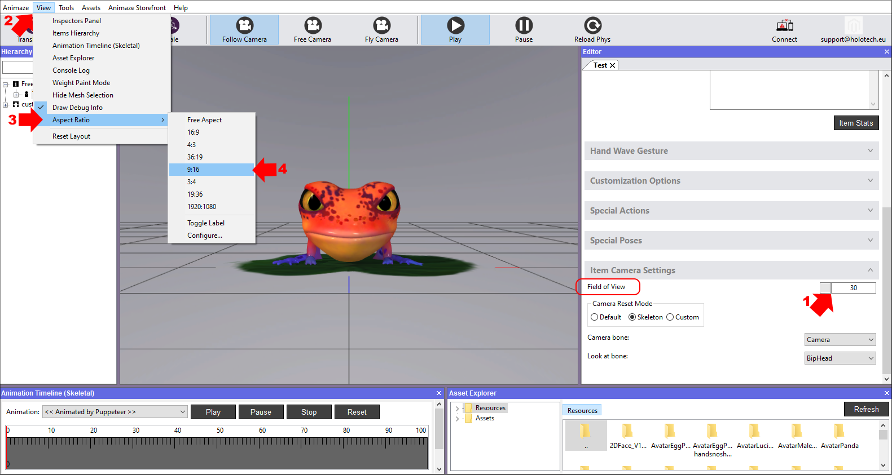
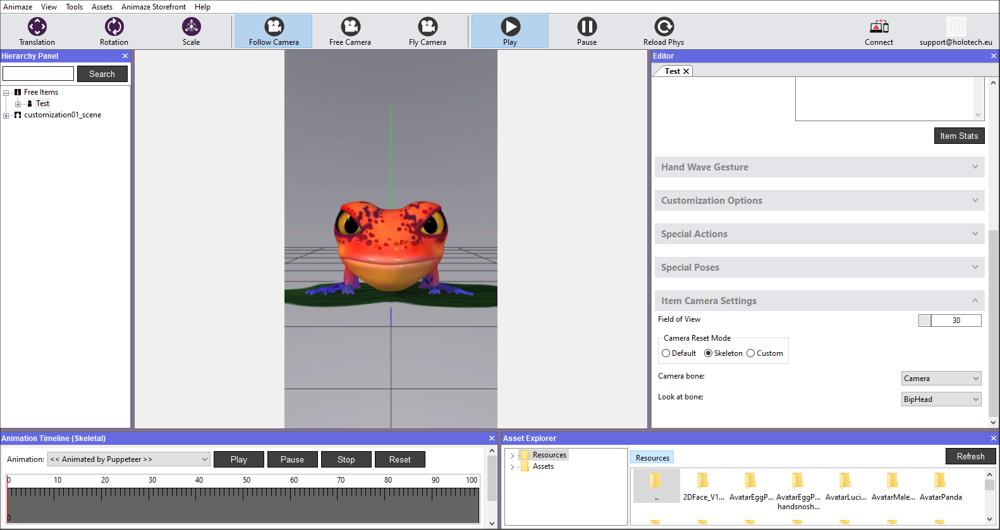

アバターにフレームをつける方法
カメラ設定を行うことで、アプリにおけるアバターの表示方法をコントロールすることができます。アバターに完璧なフレームをつけるために気にしすぎる必要はありません。ピンチでズームイン/アウトすることで、アプリ内でアバターのフレームを調整することができます。
方法はこちら：
-
Animazeエディターを開きます
右側のエディターパネルでスクロールダウンし、「アイテムカメラ設定」バーをクリックして開きます

-
FollowCameraの視野を変更すると、カメラビューアングルの広さを設定することができます。視野を30（1）に設定し、アスペクト比デバッガーを使ってiOSアプリでの表示をプレビューすることで、モバイル画面での表示を確認することができます。「表示」（2）へ移動し、「アスペクト比」（3）選択し、そこに表示されているアスペクト比のうちの1つを選択します。

4. アスペクト比が9:16のスマホにはこのように表示されます。結果に問題がなければ、階層パネルでアイテムを保存します。

5. 階層パネルでアイテムを保存して、次回以降にアバターを読み込んだときに設定を保持できるようにします

自分でアバターを作成したり、既存のアバターを改変したりする場合、一部の要素を再設定する必要があります。これらの詳細な設定については以下のセクションをご覧ください。